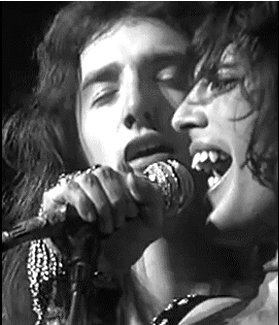
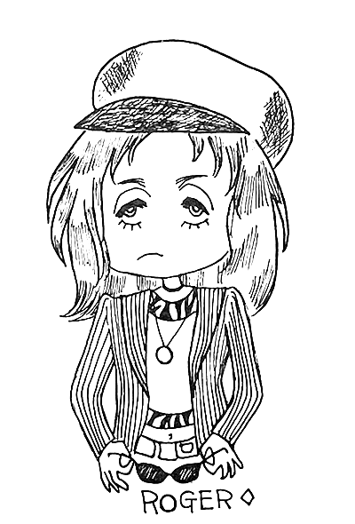

Queen Film Concert Review
by Ikko, Osaka Nakanoshima Central Public Hall, January 8th 1975
The promoter of this event is friends with the F.C. staff, so we knew that there was going to be a screening of this Queen concert and were able to buy tickets in advance. Finally the day was here! The attending staff were myself, Akko, and a new staff member named Angie, as well as BRM's Sugimoto and a new member, Uno. Together we were able to view Queen's majestic onscreen appearance!
However, on the verge of opening night, we learned that it wasn't going to be the film we thought it was going to be. I protested to the promoter, but it was no use. Rather than being the focal point, Queen was only scheduled to be shown alongside other acts, as time permitted. By the way, Akko had a school club function to attend on this day (she and I go to different schools), and so she was really late and had to call out to find me in the middle of the screening. Ahh–how embarrassing!
The show began with what's-his-face, Mike Oldfield. His performance went on for upwards of thirty minutes... and I wondered to myself if this would ever end...
Then they showed a bit of Heavy Metal Kids. Gary Holton's antics got a big laugh from the audience. And then, once part 2 of the movie began, came Queen!
In a flash of white, Freddie appeared in his big pleated cape to sing Son and Daughter, and the crowd went wild! Sometimes the girls screamed "AHH! ROGER!" when he showed up onscreen.
The second song was Modern Times Rock'n'Roll, and this time Freddie was in a black V-neck T-shirt. (I like this outfit on him best!). At the same time, Angie yelled out "Hey! Freddie!!" and Akko said softly, "Freddie... Freddie..." I remember it looked like she was going to cry. Uno was staring at the screen dumbfounded. And so was I, of course...

But this film... the sound was HORRIBLE. It wasn't the PA system either, the production must've been pretty bad. But even so, Queen was so popular with the crowd! I was speaking with the promoter afterwards, and they were saying how the boys yelled and reached for Brian whenever he showed up, while the girls screamed for Roger whenever he was shown...
And there were even boys who were yelling "Roger's so cute, show him again!!" ....Hmmmm...
After Queen, they showed some stuff like The Rolling Stones and Rory Gallagher. Akko really doesn't care for Mick Jagger, and by the third song in she was like, "Why doesn't this guy just retire already..."
Lastly was Rory Gallagher meandering onscreen for about forty minutes, irritating all the Queen fans... and those who wanted more Queen began calling for an encore (so-to-speak)... As it was after 8PM already, Akko started heckling back with "Hey, cool it!!"

At last Rory's part was over, and they played Queen a second time! The announcement came on that "We're going to play Queen one more time..." and everyone screamed! But the mood was a little more subdued the second time around. On top of that, they didn't play Liar this time! What the hell?? Turns out the promoters were the liars!
"If they were only going to play it one time, I would've paid closer attention!" said Angie.
So all-in-all, the night was both good and bad... but I feel strongly that this "catch-all film concert" is worth seeing.
Everyone, go see it if you can!
***Note: It's not clear whether this footage was from the March '74 or November '74 Rainbow gig, but given the song lineup I believe it's from March; additionally, given that she mentions that the Liar clip was a promo with the album track synced to it, there's a chance it was one of the studio promo clips from 1973 rather than footage of a live performance, although the audience reaction makes me wonder. All of this footage was shown on Japanese TV at some point regardless.